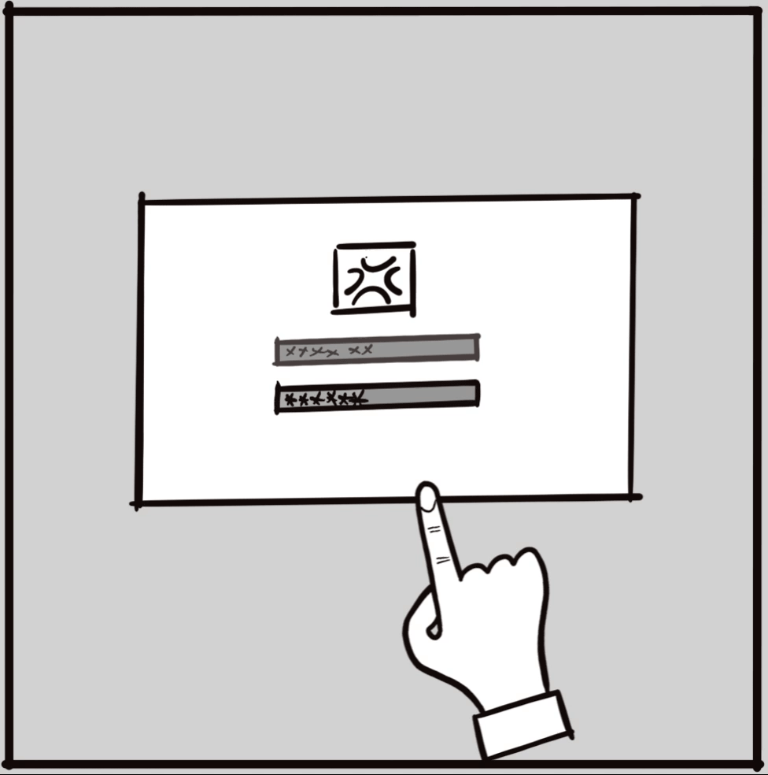
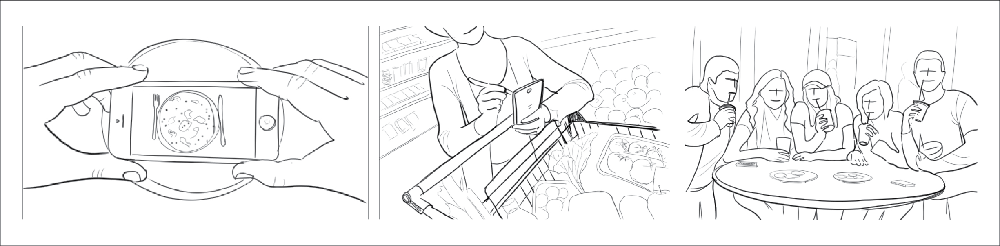
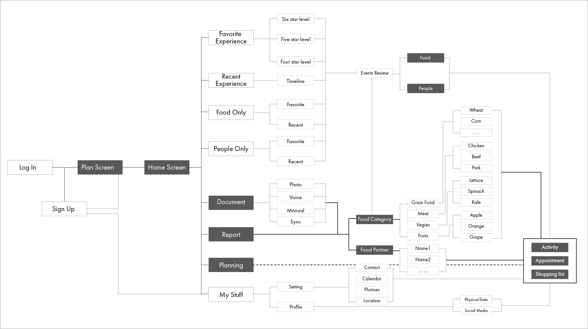

Year of 2017
UI/UX Project at DAAP College of UC
X-Food-Surprising Food Experience
Most people care a lot about their health, and love delicious food. However, the lack of fun and passion becomes a barrier between the thoughts and actions. People need motivations which can drive them to do what they are thinking and planning. Goal of this project is to provide people the fun in food related activity. Inspire more passion on food and turn everyone into a healthy FOODIE
Project Deliverables

Click-through Demo on iPhone Plus
Demo of Transition
Interface Design Details
Log in and surprise yourself
Document Food Activities and partners
Review Documented Pictures

Summary Report of Food activities
Usage Scenario
Utilize users’ existing behaivor habits

In users' current lifestyle, they are taking lots of food pictures and group photoes/selfies for social media. X-food can utilize these behaviors as individual documentations.
Exercise - Work/study - Planning
Conversation - Entertainment - Relaxing
In users' daily life, there are some scenarios when they tend to welcome notification or suggestions regarding food or drinks. These scenarios include exercise time, rest during class, plan-making time, chat or party with friend, etc.
Information Architecture & Draft Wireframe
X-food surprising service includes two types: food and food event. The whole application is structured around this core function. It documents what food users eat and what food event they have, like whom they party with and eat together. These information sets up a preference style for every user and X-food uses cloud data together with this to provide surprising experience to users.

Research and Design Process
Self-Tracking Researh
In this project, all teams employ self-tracking as the research method. I set up the goal of turning myself into a foodie and also an action plan for myself to achieve the goal. The plan is to make changes everyday in my food related activities, learn more food nutrition fact, try new restaurant, and cook more and more at home.In the process of self-tracking, I record all the actions I did and rate every day regarding goal achievement and my mood level.
Findings from self-tracking:
- It's hard to quantify everyday's progress in terms of goal achievement, I can count how many changes I made within one day, but it's hard to tell how much sense the changes contribute to my achievement.
- It's hard to keep myself motivated to execute the plan. The connections between the effort and my mood are not always straightforward. Sometimes, planed actions seem like tasks lacking the inducement for myself.
Synthesize Self-Tracking data
Method of Quantifying Research Data
- I define two parameters for each activity: Effort Level and Influence Level, both of which are rated on a scale from 1 to 6
- Categorize activity triggers into three group: emotion, social and goal-driving.
Data Visualization
The emotional influence is not determined by the quantity, but the quality of food activity. One event with many sub-activities has more chance of bringing me a happy day. Its emotional influence is not proportional to how much efforts I spent. It can be a surprising experience with very little efforts as well as well-planed food events.
Opportunities
Based on individual’s social life style and emotional status, the application finds surprising food category or suggests food-related event to make the individual happy and getting more interest in food or health knowledge.
Competitor Benchmarking
More about restaurant info/Less individual style, Emotion and Passion
Shopping list and monitoring / More like a passive tool
Target Persona
Cost-sensitive Explorer

University student, Early 20s
Work hard and play hard
Wants to be more healthy
and better body figure
Likes delicious food and
eager for more related expertise
Life Quality Pursuer
Lead designer, Mid of 30s
Love current job and role in office
A ambitious career goal
in mind and try to deliver it
Like to hang out with friends, with
a goal of cook skills and food knowledge
Experience Map
Based on self-tracking research and self-reflection, I realized there's behavior pattern. When I first discover some delicious food accidentally, usually I start to eat this food at a very high frequency within one or two months. Then the frequency will drop sharply and keep at a low frequency for a while. After this low-frequency duration, I will pick up this food and eat it at a relatively stable and high frequency. In this whole process, there's several timings when all of sudden I think of this delicious food, I feel a little bit surprisingly happy.
Mood Board